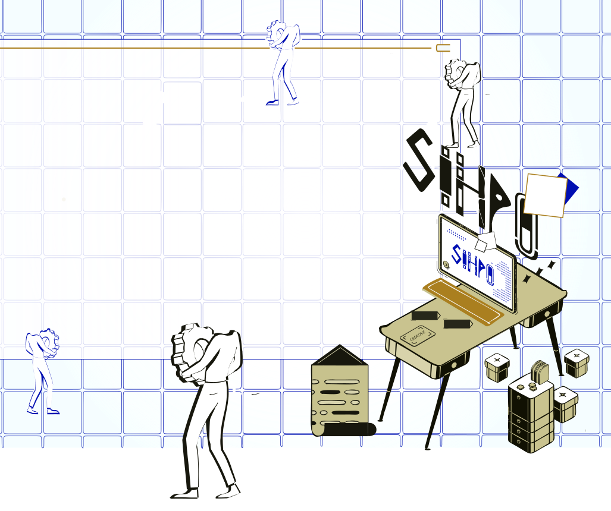
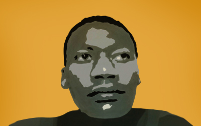

Hello,I am a design professional specialising in graphic design, digital design and visual communication, with experience working across both print and digital mediums. I create clean, purposeful and visually engaging design solutions that help communicate ideas, strengthen brand identity and achieve specific communication objectives. My work includes brand identity, logo design, print design, digital design, packaging design, marketing collateral and creative visual solutions. I also have a strong interest in UI/UX design, web design, mobile application design and front-end development, exploring how design and web technologies can work together to create intuitive and meaningful user experiences. I am passionate about continuously developing my skills and keeping up with developments in design, technology, digital experiences and creative innovation. I enjoy exploring how thoughtful visual communication, user-centred design and technology can transform the way people interact with brands, websites and digital products. Away from design, I enjoy watching documentaries, following business, innovation and technology, reading industry news and listening to podcasts. These interests continually inspire my creative thinking and help me approach design projects with curiosity, fresh perspectives and a willingness to learn.